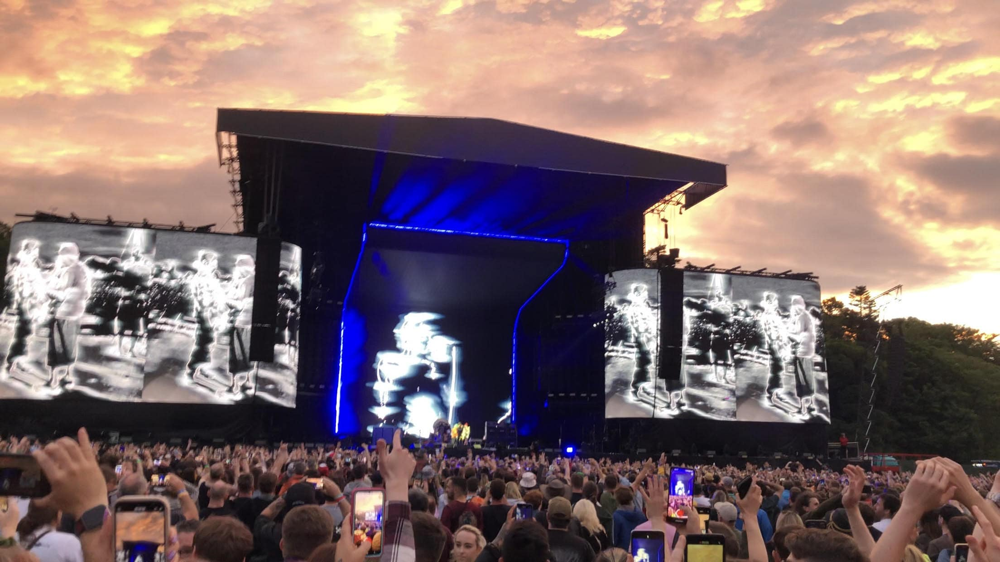

Main Interests
Music:
I play guitar in my free time and will bring it up with me to university next week.
I enjoy listening to the
Red-Hot Chili Peppers and other genres of music.
I also listen to techno music because it is a very large
genre in Sligo (where I’m from).

Exercise:
I enjoy regular exercise as I find it calming and a great time to listen to music, I also find it helps with my coding as I can step away from a problem and explore my options in my head as I work out.
Cooking:
I have worked as a chef for two summers, so I have a keen interest in cooking and eating all different kinds of foods and experimenting with my own dishes for my own enjoyment and the enjoyment of others.